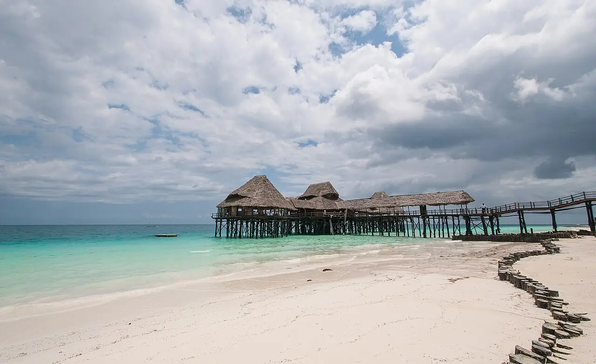

Kendwa
Zanzibar, Tanzanie · baignade, snorkeling

Plage de sable blanc sur la côte nord-ouest de Zanzibar, où la mer ne se retire pas aussi loin qu’à l’est de l’île : on s’y baigne à presque toute heure. Les sorties snorkeling en bateau partent de la côte voisine.
- Lieu
- Zanzibar, Tanzanie
- Niveau
- Débutant
- Activités
- baignade, snorkeling
- Type d'eau
- Mer / océan
- Coordonnées
- -5.75, 39.29 (position approximative du secteur)
Dangers à connaître
- Bateaux et boutres qui accostent sur la plage.
- Oursins sur les zones rocheuses : garde des chaussons.
Le conseil d'Ocean Buddy
Pour le snorkeling, rejoins une sortie en bateau organisée plutôt que de nager loin du bord.
Ouvrir dans Ocean Buddy Télécharger sur l'App Store
Source : Fiche Ocean Buddy · septembre 2026 · à vérifier localement.